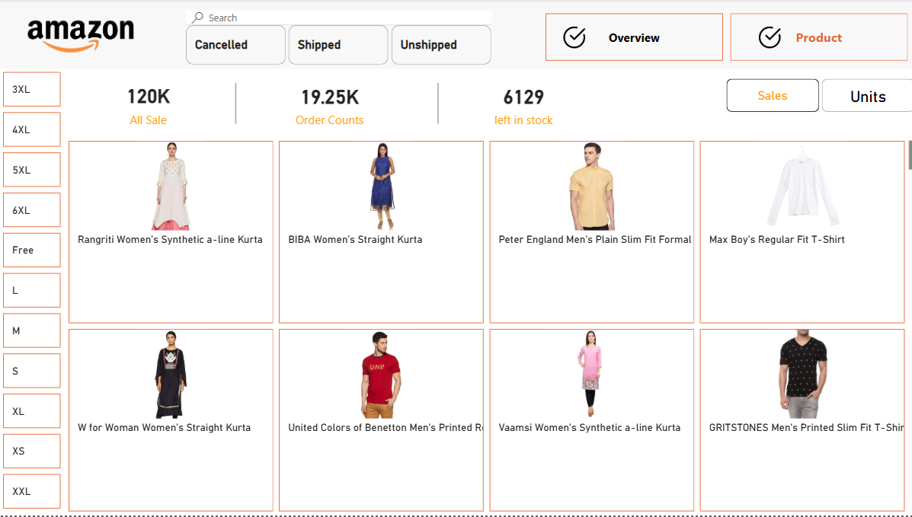

Amazon Sales Dashboard – Project Overview
Project Objective
The Amazon Sales Dashboard is designed to help e-commerce businesses analyze sales performance, track orders, and manage stock availability efficiently.
It provides a Power BI-like interactive dashboard where users can filter data based on order status, product categories, and sales trends across different locations.
Business Problem Solved
- Monitor total sales, order count, and stock levels
- Identify top-performing cities and states for sales
- Track product availability and category-wise sales
- Improve decision-making using interactive data visualizations
Key Features
- Sales Overview – Displays total sales, order count, and stock availability
- Order Status Filters – Filter orders based on status: Shipped, Cancelled, Unshipped
- Product Filtering – Sort products by size (XS, S, M, L, XL, etc.)
- Product Listings – View popular products with images and descriptions
- Sales Analysis Charts – Bar charts for sales trends by city and state
- Responsive Design – Mobile-friendly UI
Understanding the Dashboard
First Dashboard View (Product Overview)

Shows product listings with their images and descriptions. Displays total sales, order count, and stock levels.
Second Dashboard View (Sales Analysis)
Sales by City & State – Bar charts showing top-performing locations.
Order Status Filters – Users can filter sales based on order status (Shipped, Cancelled, Pending, etc.).
Trend Line Chart – Displays the sum of total sales over time, helping businesses analyze trends.
DAX Formulas and Their Functions
1 Total Sales
What it does: Calculates total revenue.
2 Current Year Sales
What it does: Calculates Year-To-Date (YTD) performance.
3 Previous Year Sales
What it does: Extracts total sales from the previous year.
4 Sales Growth Percentage
What it does: Measures the percentage increase or decrease in sales.
5 Category Assignment Using SWITCH
What it does: Assigns custom product types based on their category.
Business Insights Derived from the Dashboard
- **Understanding Sales Performance** – Identify best-selling categories and low-performing products.
- **Tracking Orders Efficiently** – Track delays and improve logistics.
- **Identifying Best-Selling Locations** – Allocate inventory efficiently.
- **Sales Trend Analysis** – Plan marketing campaigns based on trends.
Future Improvements
- 🔹 **Real-Time Data Updates**
- 🔹 **AI-Powered Insights**
- 🔹 **Cloud Integration**
- 🔹 **Enhanced Mobile Experience**
Conclusion
The Amazon Sales Dashboard provides a real-time, interactive sales tracking solution that helps businesses analyze trends, track orders, and optimize inventory, leading to better decision-making and increased profitability.